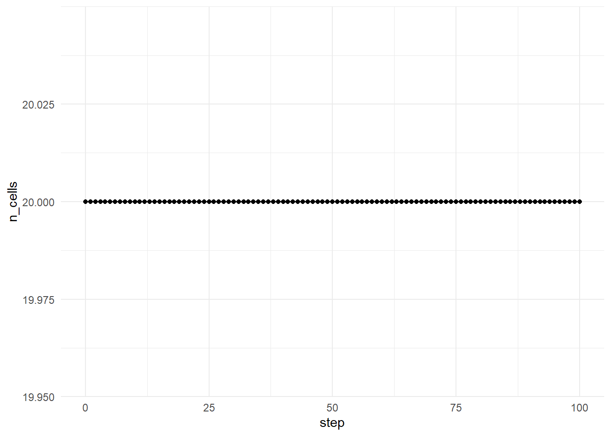

Chapter 5 Protocells and Compartmentalization
5.1 Why Compartments Matter
One of the greatest challenges facing early life was maintaining organization in a dynamic environment.
Even if useful molecules formed naturally, they faced a fundamental problem:
- molecules diffuse,
- reactions disperse products,
- useful combinations are easily lost.
Modern cells solve this problem through membranes that separate internal chemistry from the surrounding environment.
Origin-of-life researchers therefore ask an important question:
Could compartmentalization have emerged before modern cells existed?
Many scientists believe that primitive compartments, known as protocells, may have provided a critical stepping stone between chemistry and biology.
5.2 What Is a Protocell?
A protocell is a simplified cell-like structure that contains an internal chemical environment separated from the outside world.
Unlike modern cells, protocells do not necessarily possess:
- DNA
- RNA genomes
- proteins
- complex metabolism
- sophisticated membranes
Instead, protocells are often envisioned as simple compartments capable of:
- containing molecules,
- growing,
- exchanging materials,
- dividing,
- competing with other compartments.
A protocell does not need to be alive in the modern sense to play an important role in origin-of-life theories.
5.3 Why Compartments May Have Been Essential
Compartmentalization offers several potential advantages.
5.3.1 Concentration of Molecules
In an open environment, molecules diffuse and become diluted.
A compartment can keep molecules close together, increasing the probability of interaction.
5.3.2 Protection
Compartments may protect fragile molecules from:
- degradation,
- dilution,
- ultraviolet radiation,
- environmental fluctuations.
5.3.3 Cooperation
Molecules trapped within the same compartment can repeatedly interact.
This may allow simple reaction networks to become more effective.
5.4 Protocells in Origin-of-Life Theories
Several major origin-of-life theories incorporate protocells.
5.4.1 RNA World Models
RNA replicators may have benefited from compartments that prevented useful molecules from diffusing away.
5.4.2 Metabolism-First Models
Primitive metabolic networks may have required compartments to maintain reaction gradients.
5.5 Early Membranes
Modern cells use highly sophisticated phospholipid membranes.
Early protocells were likely much simpler.
Possible membrane materials include:
- fatty acids,
- lipid vesicles,
- mineral pores,
- surface-bound compartments,
- coacervate droplets.
Laboratory experiments have demonstrated that simple fatty acids can spontaneously assemble into vesicles under appropriate conditions.
This observation has strengthened interest in protocell-based origin-of-life theories.
5.6 Conceptual Model
In lifesimulatoR, protocells are represented using a simplified abundance-based model.
Each protocell contains an internal quantity that can:
- increase through growth,
- decrease through leakage,
- trigger division when a threshold is reached.
Although highly simplified, this model captures several important concepts:
- accumulation,
- retention,
- growth,
- division,
- population dynamics.
5.7 Simulating a Protocell Population
```{r protocell-basic} id=“n4k3fh” cells <- protocell_simulation( n_cells = 20, steps = 100, growth_rate = 0.2, division_threshold = 10, leakage_rate = 0.03, seed = 123 )
head(cells)
The output summarizes how the protocell population changes through time.
## Visualizing Population Growth
```{r protocell-plot} id="3q0x8g"
plot_simulation(
cells,
x = "step",
y = "n_cells"
)This plot illustrates how the number of protocells changes as growth, leakage, and division interact.
5.8 Understanding Growth
Growth represents the accumulation of internal material.
In real systems, growth might result from:
- nutrient uptake,
- chemical reactions,
- energy harvesting,
- molecular synthesis.
In the simulation, growth is represented by a simplified parameter.
Higher growth rates generally increase the likelihood of division.
5.9 Understanding Leakage
No membrane is perfect.
Early protocells were probably highly permeable.
Leakage represents the loss of internal material to the surrounding environment.
Leakage creates a tension between:
- retaining useful molecules,
- allowing exchange with the environment.
Too much leakage may prevent protocells from maintaining sufficient internal organization.
5.10 Experiment: Exploring Leakage
```{r proto-leakage} id=“1h8s2n” low_leakage <- protocell_simulation( n_cells = 20, steps = 100, growth_rate = 0.2, division_threshold = 10, leakage_rate = 0.01, seed = 123 )
high_leakage <- protocell_simulation( n_cells = 20, steps = 100, growth_rate = 0.2, division_threshold = 10, leakage_rate = 0.15, seed = 123 )
tail(low_leakage)
tail(high_leakage)
Comparing these simulations illustrates how membrane properties can strongly influence protocell success.
## The Trade-Off Between Openness and Isolation
One of the most important challenges faced by protocells is balancing openness and isolation.
A completely closed compartment may:
* retain useful molecules,
* prevent nutrient exchange.
A completely open compartment may:
* access environmental resources,
* lose valuable contents.
Successful protocells likely occupied an intermediate position.
This trade-off remains important even in modern cells.
## Division and Reproduction
When a protocell reaches a threshold size, it divides.
Division is important because it allows successful compartments to generate descendants.
Although protocell division is not identical to modern biological reproduction, it introduces a primitive form of population growth.
This creates opportunities for selection to act at the compartment level.
## Selection Among Protocells
An intriguing possibility is that selection may have operated on protocells themselves.
Consider two protocells:
* one retains useful molecules effectively,
* one loses useful molecules rapidly.
The first protocell may grow faster and divide more often.
Over time, populations may become enriched in more successful compartment types.
This idea introduces the possibility of evolution occurring simultaneously at multiple levels:
* molecular evolution,
* network evolution,
* protocell evolution.
## The Hypercycle and Cooperative Systems
Some origin-of-life researchers have proposed that compartments may help stabilize cooperative molecular systems.
Without compartments:
* selfish molecules may dominate,
* cooperative systems may collapse.
With compartments:
* groups of cooperating molecules can remain together,
* cooperative networks may become more stable.
This idea plays an important role in several theories of early evolution.
## Interpreting Simulation Results
Several outcomes are possible.
### Increasing Protocell Numbers
May indicate:
* successful growth,
* sufficient retention,
* frequent division.
### Stable Populations
May indicate:
* balance between growth and leakage.
### Declining Populations
May indicate:
* excessive leakage,
* insufficient growth,
* inability to divide.
Different parameter combinations can produce very different population dynamics.
## Limitations of the Model
The protocell model in `lifesimulatoR` is intentionally simplified.
It does not include:
* membrane chemistry,
* lipid synthesis,
* osmotic effects,
* nutrient transport,
* internal reaction networks,
* molecular composition,
* environmental variability.
Its purpose is to illustrate the conceptual importance of compartmentalization rather than reproduce realistic protocell behavior.
## Connections to Other Chapters
This chapter builds upon:
* prebiotic chemistry,
* molecular evolution,
* diversity and complexity.
It prepares the foundation for the next chapter on autocatalytic networks.
Together these chapters explore how molecules, information, networks, and compartments may have interacted during the emergence of life.
## Key Takeaways
* Compartments may have been essential for the emergence of life.
* Protocells provide a bridge between chemistry and biology.
* Compartments concentrate molecules and facilitate interactions.
* Leakage and growth create important evolutionary trade-offs.
* Division introduces a primitive form of inheritance and reproduction.
* Selection may operate on compartments as well as molecules.
* Many origin-of-life theories view protocells as critical intermediates.
* `lifesimulatoR` provides a simplified framework for exploring these ideas.
## Suggested Readings
* Luisi, P. L. (2006). *The Emergence of Life.*
* Szostak, J. W., Bartel, D. P., & Luisi, P. L. (2001). Synthesizing Life.
* Deamer, D. (2019). *Assembling Life.*
* Morowitz, H. J. (1992). *Beginnings of Cellular Life.*
* Rasmussen, S. et al. (2008). *Protocells: Bridging Nonliving and Living Matter.*
## Reflection Questions
1. Why are compartments important for the emergence of life?
2. Can selection act on protocells themselves?
3. What advantages do compartments provide compared with open environments?
4. What trade-offs arise between membrane permeability and retention?
5. Could molecular evolution occur without compartments?
6. How might protocells and replicators have co-evolved?
7. What aspects of real membrane biology are missing from this model?
8. Could compartments emerge before information-bearing molecules?
9. Why might cooperation be easier inside compartments?
10. How might future simulations incorporate molecular contents and membrane chemistry?
<!--chapter:end:05-protocells.Rmd-->
# Autocatalytic Networks
## Why Autocatalytic Networks Matter
One of the central questions in origin-of-life research is how simple chemistry became capable of self-maintenance and evolution.
Many origin-of-life theories focus on replication. In these models, a molecule capable of copying itself is viewed as the starting point of evolution.
However, another possibility exists.
Instead of a single molecule reproducing itself, an entire network of molecules may collectively sustain its own production.
This idea forms the basis of autocatalytic network theory.
In this view:
> Life may have begun not with a single replicator, but with a community of mutually supportive molecules.
Autocatalytic networks provide one possible explanation for how organization emerged before the appearance of modern genes.
## What Is Catalysis?
Catalysis occurs when one molecule increases the rate of a chemical reaction without being permanently consumed.
Catalysts are essential in modern biology.
Examples include:
* enzymes accelerating metabolic reactions,
* ribozymes catalyzing RNA reactions,
* mineral surfaces promoting chemical transformations.
Without catalysis, many biological reactions would proceed far too slowly to sustain life.
Catalysis therefore provides a mechanism by which chemical systems can become increasingly organized.
## What Is an Autocatalytic Network?
An autocatalytic network is a collection of molecules in which members of the network help produce one another.
For example:
```text id="network-example"
Molecule A helps produce Molecule B
Molecule B helps produce Molecule C
Molecule C helps produce Molecule ANo single molecule is self-sufficient.
However, the network as a whole becomes self-reinforcing.
This creates an important shift in perspective:
The unit of organization becomes the network rather than the individual molecule.
5.11 Historical Background
The concept of autocatalytic networks became particularly influential through the work of Stuart Kauffman.
Kauffman proposed that sufficiently complex chemical systems may naturally undergo a transition from disconnected reactions to self-sustaining networks.
This idea suggested a possible route to life’s emergence that does not require a highly improbable self-replicating molecule appearing first.
Instead:
- diversity increases,
- catalytic interactions accumulate,
- networks become increasingly connected,
- self-maintaining systems emerge.
This perspective remains an important alternative to purely gene-first theories.
5.12 Network-First Versus Replication-First Models
Two broad approaches to the origin of life can be contrasted.
5.13 Emergence in Chemical Networks
Autocatalytic networks provide an excellent example of emergence.
No individual molecule may possess life-like properties.
However, when many molecules interact:
- feedback loops appear,
- self-maintenance emerges,
- system-level organization develops.
The resulting behavior cannot always be predicted by examining molecules individually.
This illustrates one of the central themes of complexity science:
The whole can exhibit properties that are not obvious from the parts.
5.14 Conceptual Model
In lifesimulatoR, an autocatalytic network is represented using:
- molecular types,
- catalytic relationships,
- abundance changes through time,
- a catalysis matrix.
Although highly simplified, this framework captures the essential idea of mutual reinforcement.
5.15 Creating an Autocatalytic Network
```{r autocatalytic-basic} id=“autocatalytic-basic” network <- autocatalytic_network( n_types = 8, steps = 50, catalysis_probability = 0.2, seed = 123 )
names(network)
head(network$time_series)
The output contains both network structure and abundance dynamics.
## Understanding the Catalysis Matrix
The catalysis matrix records which molecules catalyze the production of others.
```{r autocatalytic-matrix} id="autocatalytic-matrix"
network$catalysis_matrixThe matrix can be viewed as a map of catalytic interactions.
Each connection represents a potential pathway through which molecules influence one another.
5.16 Visualizing Molecular Dynamics
We can examine the abundance of a particular molecular type.
```{r autocatalytic-plot} id=“autocatalytic-plot” m1 <- subset( network$time_series, molecule == “M1” )
plot_simulation( m1, x = “step”, y = “abundance” )
This plot shows how one molecule changes through time as it participates in the broader network.
## Feedback Loops
One of the most important features of autocatalytic systems is the presence of feedback.
### Positive Feedback
Positive feedback amplifies change.
Example:
```text id="positive-feedback"
A promotes B
B promotes C
C promotes AGrowth of one component reinforces the others.
5.17 Network Connectivity
An important property of a network is connectivity.
Connectivity refers to how many interactions exist among components.
Low connectivity produces sparse networks.
High connectivity produces dense networks.
The level of connectivity strongly influences network behavior.
5.18 Sparse Versus Dense Networks
```{r autocatalytic-density} id=“autocatalytic-density” sparse_network <- autocatalytic_network( n_types = 8, steps = 50, catalysis_probability = 0.05, seed = 123 )
dense_network <- autocatalytic_network( n_types = 8, steps = 50, catalysis_probability = 0.4, seed = 123 )
head(sparse_network$time_series)
head(dense_network$time_series)
Dense networks are more likely to contain:
* feedback loops,
* indirect interactions,
* collective dynamics.
Sparse networks tend to be less interconnected.
## The Autocatalytic Threshold
Kauffman proposed that sufficiently connected networks may experience a phase transition.
Below a critical threshold:
* reactions remain largely disconnected.
Above the threshold:
* self-sustaining networks become possible.
This idea is similar to phase transitions observed elsewhere in nature, such as:
* water freezing,
* magnets becoming ordered,
* percolation in physical systems.
The emergence of autocatalytic sets may represent a comparable transition in chemical organization.
## Autocatalytic Networks and Evolution
Autocatalytic networks raise an important question:
Can evolution occur before genetic replication?
Some researchers argue that network-level selection may occur when:
* certain networks persist longer,
* certain networks utilize resources more efficiently,
* certain networks generate more stable structures.
If so, evolution may have begun before modern genes existed.
## Networks Inside Protocells
Autocatalytic networks become even more interesting when combined with compartments.
A protocell can:
* retain catalytic molecules,
* protect network components,
* maintain higher concentrations,
* enable network inheritance during division.
Many modern theories propose that life emerged through interactions among:
* molecular evolution,
* autocatalytic networks,
* protocells.
Rather than one appearing first, these systems may have co-evolved.
## Interpreting Simulation Results
Several outcomes are possible.
### Stable Abundances
May indicate:
* balanced network interactions,
* stable catalytic relationships.
### Increasing Abundances
May indicate:
* strong positive feedback,
* successful catalytic reinforcement.
### Large Fluctuations
May indicate:
* unstable network dynamics,
* sensitivity to network structure.
### Collapse of Components
May indicate:
* insufficient support from the rest of the network.
Different network architectures can produce dramatically different outcomes.
## Limitations of the Model
The autocatalytic network model in `lifesimulatoR` is intentionally simplified.
It does not include:
* realistic reaction kinetics,
* thermodynamic constraints,
* energy requirements,
* environmental variation,
* molecular structure,
* reaction mechanisms,
* resource competition.
Its purpose is to illustrate the principles of network organization and emergence rather than reproduce real chemistry.
## Connections to Other Chapters
This chapter integrates many ideas developed earlier.
Prebiotic chemistry provides molecular diversity.
Molecular evolution introduces information and selection.
Diversity creates opportunities for interaction.
Protocells create compartments.
Autocatalytic networks provide organization.
Together these components illustrate several of the major pathways proposed for the emergence of life.
## Key Takeaways
* Autocatalytic networks consist of mutually reinforcing molecules.
* Organization can emerge from interactions among many components.
* Networks may provide an alternative to purely replication-first origin-of-life theories.
* Feedback loops play a central role in network behavior.
* Connectivity strongly influences network dynamics.
* Self-sustaining systems may emerge above critical network thresholds.
* Autocatalytic networks become especially powerful when combined with protocells.
* `lifesimulatoR` provides a simplified framework for exploring these ideas.
## Suggested Readings
* Kauffman, S. (1993). *The Origins of Order.*
* Dyson, F. (1985). *Origins of Life.*
* Hordijk, W., & Steel, M. (2004). Detecting Autocatalytic Sets.
* Smith, E., & Morowitz, H. (2016). *The Origin and Nature of Life on Earth.*
* Walker, S. I. (2017). Origins of Life and Complexity.
## Reflection Questions
1. How does a network-first model differ from a replication-first model?
2. Can organization emerge without genetic information?
3. What role do feedback loops play in complex systems?
4. Why might connectivity be important for life's emergence?
5. Could autocatalytic networks evolve before genes existed?
6. How might protocells stabilize catalytic networks?
7. What limitations arise when modeling networks using simple abstractions?
8. Can complexity emerge without selection?
9. Are autocatalytic networks sufficient for life, or merely one component of it?
10. Could life's origin have required both networks and replicators simultaneously?
<!--chapter:end:06-autocatalytic-networks.Rmd-->
# Comparing Origin-of-Life Frameworks
## Why This Chapter Matters
The previous chapters introduced several major pieces of the origin-of-life puzzle:
- Prebiotic chemistry
- Molecular evolution
- Diversity and complexity
- Protocells
- Autocatalytic networks
Each topic explains something important, but none of them alone fully explains the origin of life.
This chapter brings these ideas together.
The goal is not to choose one theory as the final answer. Instead, the goal is to compare what each framework explains well, what it struggles to explain, and how multiple frameworks may fit together.
## The Central Problem
Origin-of-life research asks how non-living chemistry became living biology.
This transition likely required several processes to become linked:
- Molecular building blocks had to form
- Molecules had to interact
- Some systems had to persist
- Information had to be stored and transmitted
- Variation had to appear
- Selection had to act
- Compartments had to organize chemical systems
- Energy flow had to sustain reactions
Different theories emphasize different starting points.
## Major Origin-of-Life Frameworks
Origin-of-life theories often differ in what they treat as the first major breakthrough.
| Framework | Main Starting Point | Central Idea |
|------------|------------|------------|
| RNA World | Information-bearing molecules | RNA-like molecules stored information and catalyzed reactions |
| Metabolism First | Energy and reaction networks | Self-sustaining chemical cycles emerged before genes |
| Protocell First | Compartments | Cell-like boundaries organized chemistry |
| Autocatalytic Sets | Networks | Molecules collectively supported their own production |
| Hybrid Models | Integration | Life emerged from coupling among molecules, networks, compartments, and energy flow |
These frameworks are sometimes presented as competitors, but they may also be complementary.
## RNA World
The RNA World hypothesis proposes that early life may have been based on RNA-like molecules.
RNA is important because it can:
- Store information
- Participate in catalysis
- Be copied with variation
- Support evolutionary dynamics
In this view, the origin of life begins with information-bearing molecules.
## What RNA World Explains Well
RNA World models help explain:
- Heredity
- Mutation
- Selection
- Molecular evolution
- The central role of RNA in modern biology
RNA still plays essential roles in living cells, including protein synthesis and regulation. This makes RNA a plausible relic of an earlier stage of life.
## What RNA World Struggles to Explain
RNA World models face several challenges:
- How did the first RNA-like molecules form?
- How were nucleotides produced under prebiotic conditions?
- How did long enough RNA molecules accumulate?
- How did early replication become accurate enough?
- How were RNA molecules protected from degradation?
The key difficulty is that RNA is chemically complex.
## RNA World in lifesimulatoR
``` r
rna_like <- simulate_abiogenesis(
n_molecules = 100,
generations = 100,
mutation_rate = 0.02,
selection_strength = 1,
seed = 123
)
head(rna_like)## # A tibble: 6 × 6
## generation n_molecules mean_length mean_fitness diversity max_fitness
## <int> <int> <dbl> <dbl> <int> <dbl>
## 1 0 100 12.6 1.00 100 1.25
## 2 1 100 12.7 1.04 67 1.25
## 3 2 100 12.3 1.05 61 1.25
## 4 3 100 12.3 1.11 61 1.25
## 5 4 100 12.5 1.11 48 1.25
## 6 5 100 12.8 1.13 53 1.25
5.19 Interpretation
This simulation represents a simplified replication-first model.
If mean fitness increases, the model demonstrates how variation, mutation, replication, and selection can drive evolutionary change.
5.20 Metabolism First
Metabolism-first theories propose that life began with self-sustaining reaction networks rather than genetic molecules.
In this view, the earliest life-like systems may have been organized flows of matter and energy.
Instead of asking how the first genetic molecule formed, metabolism-first models ask:
How could chemistry organize itself into self-maintaining reaction cycles?
5.21 What Metabolism First Explains Well
Metabolism-first models help explain:
- Energy flow
- Chemical self-organization
- Reaction cycles
- Geochemical continuity
- Environmental gradients
These theories are frequently associated with hydrothermal vent environments.
5.22 What Metabolism First Struggles to Explain
Metabolism-first models face several questions:
- How did reaction networks become heritable?
- How did they evolve without genetic information?
- How were successful networks preserved?
- How did metabolism become linked to informational polymers?
The key difficulty is explaining how chemical organization became evolvable.
5.23 Autocatalytic Set Theory
Autocatalytic set theory proposes that molecules formed networks in which members helped produce one another.
No single molecule needed to reproduce itself perfectly.
Instead, the network as a whole became self-supporting.
5.24 What Autocatalytic Sets Explain Well
Autocatalytic network models help explain:
- Collective organization
- Self-maintenance
- Feedback loops
- Emergence
- Network-level behavior
They demonstrate how system-level organization can arise from interactions among many components.
5.25 What Autocatalytic Sets Struggle to Explain
Autocatalytic set models face important questions:
- How is information stored?
- How are successful networks inherited?
- How does selection act on networks?
- How do networks avoid collapse?
- How do they become coupled to compartments?
The key difficulty is connecting network self-maintenance to heredity and evolution.
5.26 Autocatalytic Networks in lifesimulatoR
auto <- autocatalytic_network(
n_types = 8,
steps = 50,
catalysis_probability = 0.2,
seed = 123
)
head(auto$time_series)## # A tibble: 6 × 3
## step molecule abundance
## <int> <chr> <dbl>
## 1 0 M1 0.833
## 2 0 M2 0.504
## 3 0 M3 0.829
## 4 0 M4 0.831
## 5 0 M5 0.815
## 6 0 M6 0.496## [,1] [,2] [,3] [,4] [,5] [,6] [,7] [,8]
## [1,] FALSE FALSE FALSE FALSE FALSE TRUE FALSE TRUE
## [2,] FALSE FALSE TRUE FALSE FALSE FALSE FALSE FALSE
## [3,] FALSE FALSE FALSE FALSE TRUE FALSE TRUE FALSE
## [4,] FALSE FALSE FALSE FALSE FALSE FALSE FALSE FALSE
## [5,] FALSE FALSE FALSE FALSE FALSE TRUE FALSE FALSE
## [6,] TRUE FALSE FALSE TRUE FALSE FALSE TRUE TRUE
## [7,] FALSE TRUE FALSE FALSE FALSE FALSE FALSE FALSE
## [8,] FALSE FALSE FALSE FALSE FALSE FALSE FALSE FALSE5.27 Interpretation
This simulation illustrates how catalytic relationships can produce system-level dynamics.
The model does not simulate real reaction chemistry, but it helps explore how networks can become more important than individual molecules.
5.28 Protocell First
Protocell-first theories emphasize the importance of compartments.
A protocell is a simplified cell-like structure that separates an internal chemical environment from the outside world.
Compartments may have helped early systems by:
- Concentrating molecules
- Protecting fragile chemistry
- Allowing repeated interactions
- Supporting primitive inheritance
- Creating units of selection
5.29 What Protocell Models Explain Well
Protocell models help explain:
- Individuality
- Boundaries
- Growth
- Division
- Group-level selection
- The transition from chemistry to cell-like systems
Compartments are especially important because modern life is cellular.
5.30 What Protocell Models Struggle to Explain
Protocell-first models also face challenges:
- What molecules formed the first membranes?
- How did protocells grow and divide reliably?
- How were useful internal molecules retained?
- How did protocells acquire metabolism or genetic systems?
- How did protocell traits become heritable?
The key difficulty is explaining how compartments became linked to internal chemistry and information.
5.31 Protocells in lifesimulatoR
proto <- protocell_simulation(
n_cells = 20,
steps = 100,
growth_rate = 0.2,
division_threshold = 10,
leakage_rate = 0.03,
seed = 123
)
head(proto)## # A tibble: 6 × 4
## step n_cells mean_abundance max_abundance
## <int> <int> <dbl> <dbl>
## 1 0 20 2.10 2.91
## 2 1 20 2.24 3.14
## 3 2 20 2.39 3.24
## 4 3 20 2.54 3.58
## 5 4 20 2.67 3.78
## 6 5 20 2.80 3.95
5.32 Interpretation
This simulation shows how simple growth, leakage, and division rules can create protocell population dynamics.
5.33 The Chicken-and-Egg Problem
A central challenge in origin-of-life research is the chicken-and-egg problem.
Which came first?
- Information?
- Metabolism?
- Compartments?
- Networks?
Different theories answer differently.
5.35 Comparing Strengths and Limitations
| Framework | Explains Well | Struggles To Explain |
|---|---|---|
| RNA World | Information, heredity, mutation, selection | Origin of first replicators |
| Metabolism First | Energy flow, reaction cycles | Heredity and evolvability |
| Protocell First | Boundaries, individuality | Origin of information systems |
| Autocatalytic Sets | Self-organization, feedback | Accurate inheritance |
| Hybrid Models | Integrates strengths | Harder to test experimentally |
5.36 Are These Theories Competitors?
It is tempting to treat origin-of-life theories as mutually exclusive.
However, they may describe different parts of the same process.
For example:
- Prebiotic chemistry may have produced molecular diversity
- Autocatalytic networks may have organized some molecules into self-maintaining systems
- Protocells may have contained and protected these systems
- RNA-like molecules may have introduced stronger heredity
- Selection may have acted at both molecular and compartment levels
In this view, the origin of life was not a single event.
It was a sequence of transitions.
5.37 Toward a Hybrid Model
A hybrid model may be the most realistic framework.
Such a model would include:
- Chemistry producing molecular diversity
- Networks generating self-maintenance
- Compartments creating individuality
- Informational molecules enabling heredity
- Energy flow sustaining reactions
- Selection shaping populations
The central idea is:
Life may have emerged when chemistry, information, networks, compartments, and energy flow became coupled.
5.38 Conceptual Map
Prebiotic chemistry
↓
Molecular diversity
↓
Autocatalytic interactions
↓
Compartmentalization
↓
Molecular evolution
↓
Coupled chemical systems
↓
Earliest life5.39 Package Comparison
The package allows users to explore simplified versions of several frameworks.
5.39.1 Molecular Evolution
mol <- simulate_abiogenesis(
n_molecules = 100,
generations = 100,
mutation_rate = 0.02,
selection_strength = 1,
seed = 123
)
tail(mol)## # A tibble: 6 × 6
## generation n_molecules mean_length mean_fitness diversity max_fitness
## <int> <int> <dbl> <dbl> <int> <dbl>
## 1 95 100 10.6 1.19 56 1.24
## 2 96 100 10.9 1.19 55 1.24
## 3 97 100 10.8 1.19 55 1.20
## 4 98 100 10.8 1.19 51 1.20
## 5 99 100 10.8 1.20 56 1.20
## 6 100 100 10.8 1.20 56 1.205.39.2 Protocells
## # A tibble: 6 × 4
## step n_cells mean_abundance max_abundance
## <int> <int> <dbl> <dbl>
## 1 95 20 6.84 7.44
## 2 96 20 6.85 7.41
## 3 97 20 6.87 7.43
## 4 98 20 6.89 7.48
## 5 99 20 6.91 7.56
## 6 100 20 6.90 7.495.39.3 Autocatalytic Networks
net <- autocatalytic_network(
n_types = 8,
steps = 50,
catalysis_probability = 0.2,
seed = 123
)
tail(net$time_series)## # A tibble: 6 × 3
## step molecule abundance
## <int> <chr> <dbl>
## 1 50 M3 199.
## 2 50 M4 208.
## 3 50 M5 148.
## 4 50 M6 271.
## 5 50 M7 354.
## 6 50 M8 366.5.40 What a Complete Model Would Need
A more complete origin-of-life simulation would include:
- Realistic prebiotic chemistry
- Energy sources and sinks
- Molecular degradation
- Catalytic reaction networks
- Compartments
- Transport across boundaries
- Heredity
- Mutation
- Selection
- Environmental change
- Spatial structure
Such a model would be vastly more complex than the current educational simulations.
5.41 Open Questions in Origin-of-Life Research
Despite decades of research, the origin of life remains one of science’s greatest unsolved problems. Significant progress has been made, but many fundamental questions remain open.
5.41.1 What Is Life?
A surprisingly difficult question is:
What exactly do we mean by life?
Scientists generally agree that living systems exhibit characteristics such as:
- organization,
- metabolism,
- reproduction,
- evolution,
- information storage,
- adaptation.
However, there is no universally accepted definition.
For example:
- Are viruses alive?
- Could self-maintaining chemical systems be considered alive?
- Is evolution required before a system can be called living?
Understanding the origin of life requires understanding what life itself actually is.
5.41.2 How Did Information First Emerge?
Modern life depends on information stored in DNA and RNA.
Important questions include:
- Did RNA emerge first?
- Were there earlier information systems?
- How did molecular information become heritable?
- How did accurate replication arise?
Information is central to biology, but its earliest origins remain uncertain.
5.41.3 How Did Metabolism Begin?
Living systems continuously process energy and matter.
Open questions include:
- How did the first reaction networks arise?
- Could metabolism emerge spontaneously?
- What role did hydrothermal vents play?
- How did energy flow become organized?
The emergence of metabolism remains one of the major challenges for origin-of-life theories.
5.41.4 How Did Compartments Arise?
Cells depend on membranes and compartments.
Researchers continue to investigate:
- What molecules formed the first membranes?
- How stable were early protocells?
- How did compartments interact with molecular evolution?
- How did primitive cells become increasingly complex?
Compartmentalization may have been essential for transforming chemistry into biology.
5.41.5 Was the Origin of Life Inevitable?
One of the most profound questions is whether life is common or rare.
Possible viewpoints include:
- Life emerges whenever suitable conditions exist.
- Life is extremely unlikely and rare.
- Multiple pathways can lead to life.
- Life may emerge repeatedly under different chemical conditions.
At present, we do not know which possibility is correct.
5.41.6 Is Life Common in the Universe?
The search for life beyond Earth is closely connected to origin-of-life research.
Questions include:
- Did life emerge independently elsewhere?
- What environments are most promising?
- Should we expect life to resemble Earth life?
- Could completely different forms of life exist?
Astrobiology continues to expand our understanding of these possibilities.
5.42 Future Directions
Origin-of-life research is advancing rapidly through new experiments, computational models, and interdisciplinary collaboration.
Several areas are likely to play major roles in future discoveries.
5.42.1 Experimental Advances
Researchers are actively exploring:
- Prebiotic synthesis pathways
- Synthetic protocells
- Artificial evolution experiments
- RNA catalysis
- Self-assembling chemical systems
- Laboratory models of early Earth environments
These studies help constrain what may have been possible on the early Earth.
5.42.2 Computational Advances
Computer simulations are becoming increasingly important.
Future models may include:
- Realistic reaction chemistry
- Molecular folding
- Environmental variability
- Energy flow
- Multi-level selection
- Spatial structure
- Network evolution
- Coupled protocell-network systems
Computational models allow researchers to explore scenarios that are difficult to study experimentally.
5.42.3 Future Directions for lifesimulatoR
The current package focuses on educational models. Future versions could incorporate more advanced concepts, including:
- RNA World simulations
- Metabolism-first models
- Hydrothermal vent environments
- Wet-dry cycling chemistry
- Lipid vesicle formation
- Multi-level selection
- Spatial simulations
- Energy-gradient environments
- Reaction-diffusion systems
- Information-theoretic complexity metrics
- Evolution of protocells
- Coupled network-compartment simulations
- Interactive Shiny applications
- Animated educational visualizations
These additions would allow users to explore a broader range of origin-of-life hypotheses.
5.43 Final Reflections
The origin of life remains one of the deepest scientific mysteries.
No single theory currently explains how non-living matter became living systems. Instead, researchers continue to investigate how molecular information, reaction networks, compartmentalization, and energy flow may have combined to produce the first life-like systems.
The purpose of this book has not been to provide a final answer. Rather, it has been to introduce the major ideas, theories, models, and questions that shape modern origin-of-life research.
Through the simplified simulations provided by lifesimulatoR, readers can explore these concepts directly and develop intuition about how complex biological systems may emerge from simpler beginnings.
The story of life’s origins is still being written. Future discoveries may confirm existing theories, reveal entirely new mechanisms, or show that several frameworks must be combined to explain how life first emerged.
Perhaps the most exciting aspect of origin-of-life research is that some of the most important discoveries may still lie ahead.
5.44 Key Takeaways
- Origin-of-life theories emphasize different starting points.
- RNA World focuses on information and heredity.
- Metabolism First focuses on energy flow and reaction cycles.
- Protocell First focuses on compartments and individuality.
- Autocatalytic Set Theory focuses on network self-maintenance.
- Hybrid models combine these ideas.
- Theories may be complementary rather than mutually exclusive.
- A complete theory likely requires chemistry, information, networks, compartments, and energy flow.
lifesimulatoRprovides simplified models for exploring these frameworks.
5.45 Suggested Readings
- Gilbert, W. (1986). The RNA World
- Kauffman, S. (1993). The Origins of Order
- Deamer, D. (2019). Assembling Life
- Szostak, J. W., Bartel, D. P., & Luisi, P. L. (2001). Synthesizing Life
- Smith, E., & Morowitz, H. J. (2016). The Origin and Nature of Life on Earth
- Walker, S. I. (2017). Origins of Life and Complexity
5.46 Reflection Questions
- Which framework seems most convincing?
- Are these theories competitors or complementary explanations?
- What does each framework explain particularly well?
- What does each framework fail to explain?
- Could life have emerged through several interacting processes rather than one dominant mechanism?
- Which process seems most fundamental: information, metabolism, compartments, or networks?
- What would be needed to build a more complete simulation?
- How could
lifesimulatoRbe expanded to better compare these hypotheses? - Does a hybrid model make the origin of life easier or harder to explain?
- What would count as strong evidence for one framework over another?